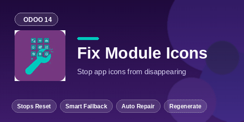
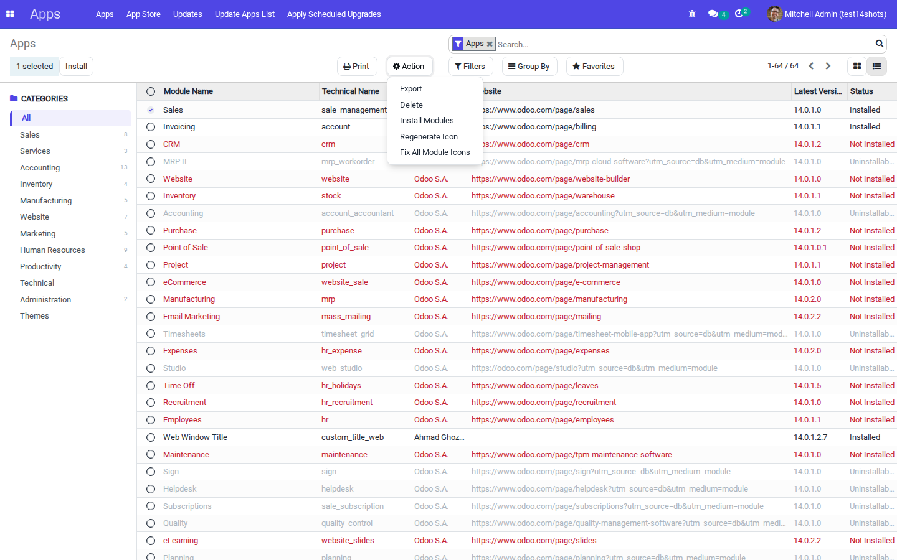
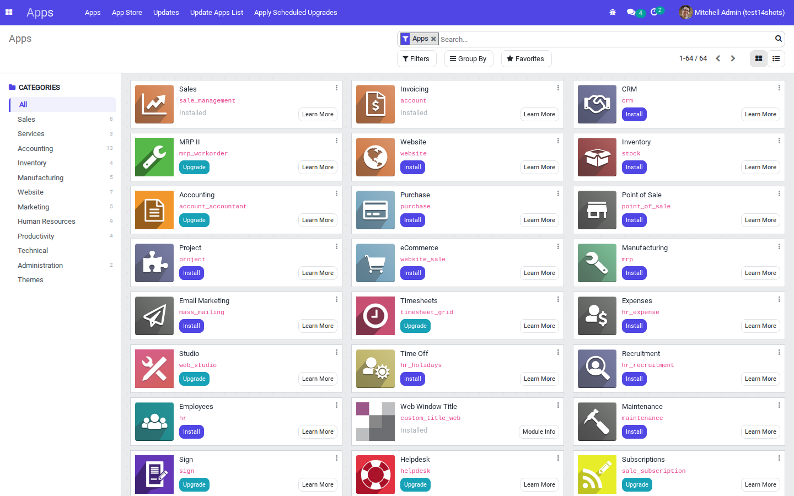

FI |
Fix Module Icons
Stop app icons from disappearing every time you install or upgrade a module.
Odoo 14
LGPL-3
FREE
|

In Odoo 14, installing or upgrading one module can break the icons of other modules on the Apps page — rotating through your list with each installation. This module fixes the root cause permanently, and your original module icons are preserved — no placeholders.
icon key, the already-stored icon value is left untouched.3 protection mechanisms stop the reset, smart fallback, one-click repair |
2 one-click actions Regenerate Icon + Fix All Module Icons |
1 auto-repair on install all broken icons fixed at once |
0 placeholder icons your original icons are preserved |
Why do icons break? The Apps page renders each card from the stored ir.module.module.icon field. On every install/upgrade, Odoo rewrites that field from the icon key of the module manifest. Modules without an icon key get their stored icon reset to empty — hence the broken images.
What this module does: 1. get_values_from_terp: if the manifest has no icon key, the already-stored icon value is left untouched (no more reset to False). 2. update_list: modules with an empty icon get Odoo’s standard fallback (/<module>/static/description/icon.png, else the base icon). 3. One-click repair, no scripts needed: installing this module automatically repairs all broken icons.

Action menu on the Apps list — Regenerate Icon and Fix All Module Icons (test database).Odoo 14.0 only. The fix targets the exact icon-reset behaviour of Odoo 14.
| Module | Status |
|---|---|
| Odoo 14.0 | Required — this build is for 14.0 only |
base |
Required — the only dependency |
Apps list — select a module, open Action, and repair with Regenerate Icon or Fix All Module Icons (test database).

Apps page with module icons intact after install/upgrade (test database).| Situation | What you get |
|---|---|
| Every install/upgrade breaks a different app icon | Root cause fixed — stored icons are never reset when a manifest has no icon key |
| Half the Apps page already shows broken images | 1 install auto-repairs all broken icons; Fix All Module Icons repeats it on demand |
| A module ships without an icon at all | Odoo’s standard fallback icon is used instead of a broken image |
| You want the original icons, not generic placeholders | 0 placeholders — the original icon of each module is preserved |
fix_module_icons folder into an addons path of your Odoo 14 installation.odoo-bin -d <db> -i fix_module_icons --stop-after-init, or from Apps → Update Apps List → Install.Why do icons break in Odoo 14?
The Apps page renders each card from the stored ir.module.module.icon field. On every install/upgrade, Odoo rewrites that field from the icon key of the module manifest. Modules without an icon key get their stored icon reset to empty — hence the broken images.
Does it change my module icons?
No — it preserves the original icon of each module. Only empty icons receive Odoo’s standard fallback.
What if a module has no icon at all?
It gets Odoo’s standard fallback icon (/<module>/static/description/icon.png, else the base icon) instead of a broken image.
Do I need to run anything after installing?
No — installing the module automatically repairs all broken icons. The two Action menu items are there for later, manual repairs.
Author: Ahmad Ghozali · License: LGPL-3. Version: 14.0.2.0.5.